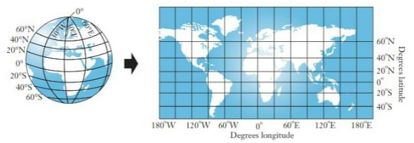
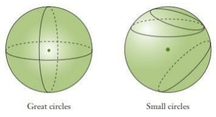
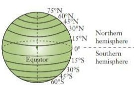
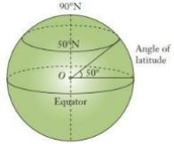
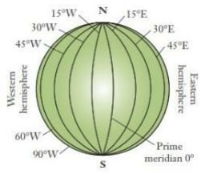
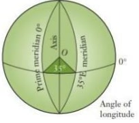
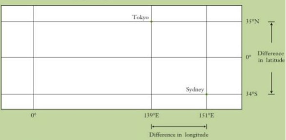
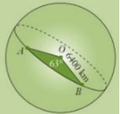

Math Notes
Longitudes and Latitudes
Introduction
- Just as we use a coordinate system to locate points on a number plane so we use latitude and longitude to locate points on the earth’s surface.
- Because the Earth is a sphere, we use a special grid of lines that run across and down a sphere.
- The diagrams below show this grid on a world globe and a flat world map.

Great and Small Circles
- If you cut a ‘slice’ through a sphere, its shape is a circle.
- A slice through the centre of a sphere is called a great circle, and its radius is the same as that of the sphere. Any other slice is called a small circle, because its radius is smaller than that of a great circle.Hence great circles divides the sphere into two equal parts

Latitude
- Latitudes are imaginary lines that run around the earth and their planes are perpendicular to the axis of the earth.
- The equator is the latitude that divides the earth into two equal parts.
- Its the only great circle among the latitudes. The equator is 0°.
- The angle of latitude is the angle the latitude makes with the Equator at the centre, O, of the Earth.
- The diagram shows the 50°N parallel of latitude. Parallels of latitude range from 90°N (North Pole) to 90°S (South Pole).
- The angle 500 subtended at the centre of the earth is the is the is the latitude of the circle passing through 500 north of equator.The maximum angle of latitude is 900 north or south of equator.


Longitudes/Meridians
- They are circles passing through the north and south poles
- They can also be said that they are imaginary semicircles that run down the Earth.
- They are ‘half’ great circles that meet at the North and South Poles.
- The main meridian of longitude is the prime meridian, 0°. It is also called the Greenwich meridian since it runs through the Royal Observatory at Greenwich in London, England.
- The other meridians are measured in degrees
east or west of the prime meridian.
 - The angle of longitude is the angle the meridian makes with the prime meridian at the centre, O, of the Earth.
- The diagram shows the 35°E meridian of longitude.
- Meridians of longitude range from 180°E to
180°W. 180°E and 180°W are actually the same meridian, on
the opposite side of the Earth to the prime
meridian. It runs through the Pacific Ocean,
east of Fiji.

Note - If P is θ north of the equator and Q is α south of the equator, then the difference in latitude between them is given by (θ + α)
- If P and Q are on the same side of the equator , then the difference in latitude is (θ - α)
Position Coordinates
- Locations on the Earth are described using latitude (°N or °S) and longitude (°E or °W) in that order.
- For example, Nairobi has coordinates (1°S, 37°E), meaning it is position is 1° south of the Equator and 37° east of the prime meridian.
Example
Sydney's coordinates are (34°S 151°E) while Tokyo's are (35°N, 139°E).
- Find their difference in latitude.
- Find their difference in longitude.
- Which city is further west?
Solution
It is useful to draw a rough grid to position the cities.

- Difference in latitude = 35° + 34° = 690 Difference between 35 N and 34 S.
- Difference in longitude = 151° - 139° = 12° Difference between 151°E and 139°E.
- Sydney is further east, so Tokyo is further west.
Great Circle Distances
- Remember the arc length of a circle is where θ is the degrees of the central angle, and the radius of the earth is 6370 km approx.
- On a flat surface, the shortest distance between two points is a straight line.
- Since the Earth’s surface is curved,
the shortest distance between A and B is the
arc length AB of the great
circle that passes through A and B. This is called the great
circle distance and the size of angle ∠AOB where O
is the centre of the Earth is
called the angular distance.
Note- The length of an arc of a great circle subtending an angle of 1i (one minute) at the centre of the earth is 1 nautical mile nm.
- A nautical mile is the standard international unit from measuring distances travelled by ships and aeroplanes 1 nautical mile (nm) = 1 .853 km
- If an arc of a great circle subtends an angle θ at the centre of the earth,the arcs length is (60 x θ) nautical miles.
Example
A and B on the Earth's surface have an angular distance of 63o. Calculate the great circle distance
between A and B, correct to the nearest kilometre. The radius of the Earth is 6400 km.

Solution
AB = θ x 2πr
360
= 63 x 2 x π x 6400 = 7037.1675.
360
= 7037 km
Example
Beijing, China and Perth, Australia have coordinates (40°N, 116°E) and (32°S, 116°E) respectively.
- What great circle joins Beijing and Perth?
- What is the angular distance between these two cities?
- Hence, calculate the shortest distance between Beijing and Perth, to the nearest kilometre, given that the Earth's radius is 6400 km.
Solution
- The 116°E meridian of longitude.
- Angular distance = 40° +32° = 72°
- Distance = 72 x 2π x 6400
360
= 8042.4772...
= 8042 km
Example
Find the distance between points P( 400 N ,500E) and Q (20030'S, 500E) and express it in;
- Nm
- Km (Take radius of the earth to be 6370 km)
Solution
- Angle subtended at the centre is 400 +
20.50 =
60.50
10 Is subtended by 60 nm
60.50 Is subtended by; 60 x 60.5 = 3630 nm - The radius of the earth is 6370 km
Therefore, the circumference of the earth along a great circle is;
2πr = 6370 x 2 x 22
7
Angle between the points is 60.50.Therefore, we find the length of an arch of a circle which subtends an angle of 60.50 at the centre is 3600 is subtended by arc whose length is
6370 x 2 x 22
7
Therefore, 60.50 Is subtended by; 60.5 x 6370 x 2 x22 = 6729 km
360 7
Example
Find the distance between points A ( 00 ,300E ) and (00 ,500E) and express it in ;
- Nm.
- Km(Take the radius of the earth to be 6370 km)
Solution
- The two points lie on the equator, which is great circle. Therefore ,we are
calculating distance along a great circle.
Angle between points A and B is (500 − 300) = 200 - Distance in km = 20 x 6370 X 2 X 22 = 2224 km
360 7
Distance along a Small Circle (Circle of Latitude)
- The figure below ABC is a small circle, centre X and radius r cm.PQST is a great circle ,centre O,radius R cm.
- The angle θ
is between the two radii.(OC and OT)

- From the figure, XC is parallel to OT.
Therefore, angle COT = angle XCO=θ(alternate angles). Angle CXO =900 (Radius XC is perpendicular to the axis of sphere).

- Thus, from the right- angled triangle
OXC
Cos θ = r
R
Therefore, r = R cosθ - This expression can be used to calculate the distance between any two points along the small circle ABC, centre X and radius r.


Example
Find the distance in kilometers and nautical miles between two points (300N 450E) and Q ( 300N 600W).
Solution
Figure a shows the position of P and Q on the surface of the earth while figure
b shows their relative positions on the small circle is the centre of the circle of latitude
300N
with radius r.
The angle subtended by the arc PQ centre C is
450 + 600 = 1050.So, the length of PQ
= 105 × 2πr
360
= 105 × 2πRcos 300 km
360
= 105
× 2× 22 × 6370Cosθ km
360
7
= 10113 km
The length of PQ in
nautical miles
= 60 x 105 cos300nm
= 60 x 105 x 0.8660 nm = 5456
nm
In general, if the angle at the centre of a circle of latitude θ is α,then the length of its arc is 60 αcos θ nm,where α is the angle between the longitudes along the same latitude.
Shortest Distance Between Two Points on the Earths Surface
- The shortest distance between two points on the earths surface is that along a great circle.
Example
P and Q are two points on latitude 500N. They lie on longitude 400 W and 132 E0 respectively. Find the distance from P to Q :
- Along a parallel of latitude
- Along a great circle
Solution
The positions of P and Q on earths surface are as shown below
- The length of the circle parallel of
latitude 500N is 2 πr
km, which is 2πRcos500km.The
difference in longitude between P and Q is 1320 + 480 = 1800
PQ= 180 × 2 ×22 × 6370 cos 50o = 12869 km
360 7 - The required great circle passes via the
North Pole. Therefore, the angle subtended at the centre by the arc PNQ is;
= 1800 – 2 x 500 = 800
Therefore the arc PNQ
= 80 × 2 πR
360
= 80 × 2 × 22 × 6370 = 8898 km
360 7

Note;
Notice that the distance between two points on the earth’s surface along a great circle is shorter than the distance between them along a small circle
Longitude and Time
- The earth rotates through 3600 about its axis every 24 hours in west – east direction. Therefore for every 1 0 change in longitude there is a corresponding change in time of 4 minutes, or there is a difference of 1 hour between two meridians 150 apart.
- All places in the same meridian have the same local time. Local time at Greenwich is called Greenwich Mean Time, GMT.All meridians to the west of Greenwich Meridian have sunrise after the meridian and their local times are behind GMT.
- All meridian to the east of Greenwich Meridian have sunrise before the meridian and their local times are ahead of GMT. Since the earth rotates from west to east, any point P is ahead in time of another point Q if P is east of Q on the earth’s surface.
Example
Find the local time
in Nairobi ( 10
S,370 E), when the local time of Mandera (Nairobi (
40 N ,420 E) is
3.00 pm
Solution
The difference in
longitude between Mandera and Nairobi is (420 - 370) = 50, that is Mandera is 50 east of Nairobi.
Therefore their local time differ by; 4 x 5 = 20 min.
Since Nairobi is in the west of Mandera, we subtract 20 minutes from 3.00 p.m.
This gives local time for Nairobi as 2.40 p.m.
Example
If the local time of London ( 520 N,00), is 12.00 noon, find the local time
of Nairobi ( 10
S,370 E ),
Solution
Difference in longitude
is ( 370 + 00)
= 370
So the difference in time is 4 x 37 min = 148 min
= 2 hrs. 28 min
Therefore , local time of
Nairobi is 2 hours 28 minutes ahead that of London that is,2.28 p.m
Example
If the local time of point A (00 N,1700 E) is
12.30 a.m, on Monday,Find the local time of a point B (00N,1700 W).
Solution
Difference in
longitude between A and B is 1700 + 1700 = 3400
In time is 4 x 340 = 1 360
min
= 22 hrs. 40 min.
Therefore local time in point B is 22 hours 40 minutes behind Monday 1 2:30 p.m.
That is, Sunday 1 .50 a.m.
Speed
- A speed of 1 nautical mile per hour is called a knot. This unit of speed is used by airmen and sailors.
Example
A ship leaves Mombasa (40S,390E)and sails due east for 98 hours to appoint K Mombasa (40S,800E)in the indian ocean.Calculate its average speed in;
- Km/h
- Knots
Solution
- The length x of the arc from Mombasa to the
point K in the ocean
41 x 2πr
360
= 41 x 2πRcos 40 km
360
= 41 x 2 x 22 x 6370 cos 40 km= 4549 km
360 7
Therefore speed is = 4549 = 46.41 km/h
98 - The length x of the arc from Mombasa to the
point K in the ocean in nautical miles
x = 60 x 41 x cos40 nm
= 60 x 41 x 0.9976 nm = 2454 nm
Therefore , speed = 2454
98
= 25.04 knots
Past KCSE Questions on the Topic
- An aeroplane flies from point A (10
15’S, 370
E) to a point B directly North of A. the arc AB
subtends an angle of 450 at the center of the earth. From B, aeroplanes flies due west two a
point C on longitude 230 W.) (Take the value of π = 22/7 as and radius of the earth as
6370km)
-
- Find the latitude of B
- Find the distance traveled by the aeroplane between B and C
- The aeroplane left at 1 .00 a.m. local time. When the aeroplane was leaving B, what was the local time at C?
-
- The position of two towns X and Y are given to the nearest degree as X
(450 N,
100W) and Y
(450 N, 700W)
Find- The distance between the two towns in
- Kilometers (take the radius of the earth as 6371 )
- Nautical miles (take 1 nautical mile to be 1 .85 km)
- The local time at X when the local time at Y is 2.00 pm.
- The distance between the two towns in
- A plane leaves an airport A (38.50N, 37.050W) and flies dues North to a point
B on latitude 520N.
- Find the distance covered by the plane
- The plane then flies due east to a point C, 2400 km from B.
Determine the position of C
Take the value π of as 22/7 and radius of the earth as 6370 km
- Find the distance covered by the plane
- A plane flying at 200
knots left an airport A (300S, 310E) and flew due North to an airport B (300N, 310E)
- Calculate the distance covered by the plane, in nautical miles
- After a 15 minutes stop over at
B, the plane flew west to an airport C (300 N,
130E) at the same
speed.
Calculate the total time to complete the journey from airport C, though airport B
- Two towns A and B lie on the same latitude in the northern
hemisphere. When its 8 am at A, the time at B is 11.00
am.
- Given that the longitude of A is
150 E find
the longitude of B.
- A plane leaves A for B and takes
31/2 hours to arrive at B traveling along a parallel of
latitude at 850 km/h. Find:
- The radius of the circle of latitude on which towns A and B lie.
- The latitude of the two towns (take radius of the earth to be 6371 km)
- Given that the longitude of A is
150 E find
the longitude of B.
- Two places A and B are on the same circle of latitude north of the equator. The longitude of A is 1180W and the longitude of B is 1330 E. The shorter distance between A and the circle of latitude is 5422 nautical miles. Find, to the nearest degree, the latitude on which A and B lie B measured along
- A plane flies by the short estimate route from P (100S, 600 W) to Q (700 N, 1200 E) Find the distance flown in km and the time taken if the aver age speed is 800 km/h. Calculate the distance in km between two towns on latitude 500S with long longitudes and 200 W. (take the radius of the earth to be 6370 km)
- Calculate the distance between M
(300N,
360E) and N
(300 N,
1440 W) in nautical
miles.
- Over the North Pole
- Along the parallel of latitude 300 N
-
- A ship sailed due south along a meridian from 120 N to 10030’S. Taking the earth to be a sphere with a circumference of 4 x 104 km, calculate in km the distance traveled by the ship.
- If a ship sails due west from San Francisco (370 47’N, 1220 26’W) for distance of 1320 km. Calculate the longitude of its new position (take the radius of the earth to be 6370 km and π = 22/7)